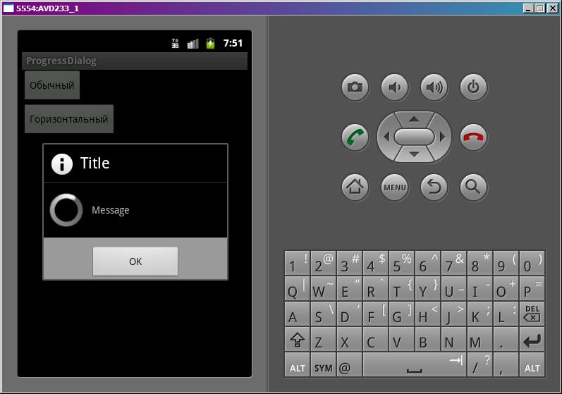
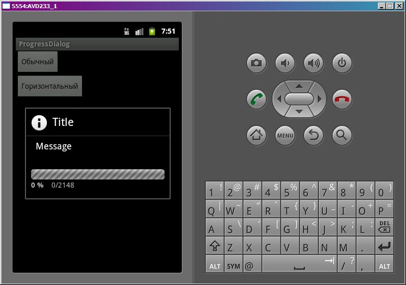
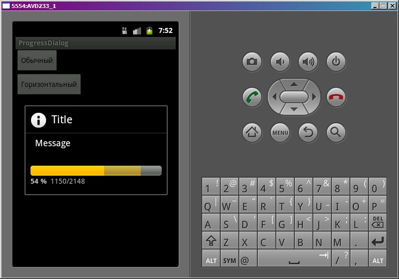

В этом уроке:
- работаем с ProgressDialog
ProgressDialog позволяет показать пользователю, что идет какая-либо операция и надо подождать. Он бывает двух видов: просто вращающийся круг и полоса-индикатор, которая показывает процент выполнения. Сделаем приложение, которое будет показывать оба вида.
Создадим проект:
Project name: P0671_ProgressDialog
Build Target: Android 4.0
Application name: ProgressDialog
Package name: ru.startandroid.develop.p0671progressdialog
Create Activity: MainActivity
В strings.xml пропишем тексты:
<?xml version="1.0" encoding="utf-8"?>
<resources>
<string name="dflt">Обычный</string>
<string name="horiz">Горизонтальный</string>
<string name="app_name">ProgressDialog</string>
</resources>main.xml:
<?xml version="1.0" encoding="utf-8"?>
<LinearLayout
xmlns:android="http://schemas.android.com/apk/res/android"
android:layout_width="fill_parent"
android:layout_height="fill_parent"
android:orientation="vertical">
<Button
android:id="@+id/btnDefault"
android:layout_width="wrap_content"
android:layout_height="wrap_content"
android:text="@string/dflt"
android:onClick="onclick">
</Button>
<Button
android:id="@+id/btnHoriz"
android:layout_width="wrap_content"
android:layout_height="wrap_content"
android:text="@string/horiz"
android:onClick="onclick">
</Button>
</LinearLayout>Две кнопки: одна покажет диалог с крутящимся кругом (ProgressDialog по умолчанию), другая - с горизонтальной полосой индикатором
MainActivity.java:
package ru.startandroid.develop.p0671progressdialog;
import android.app.Activity;
import android.app.Dialog;
import android.app.ProgressDialog;
import android.content.DialogInterface;
import android.content.DialogInterface.OnClickListener;
import android.os.Bundle;
import android.os.Handler;
import android.os.Message;
import android.view.View;
public class MainActivity extends Activity {
ProgressDialog pd;
Handler h;
/** Called when the activity is first created. */
@Override
public void onCreate(Bundle savedInstanceState) {
super.onCreate(savedInstanceState);
setContentView(R.layout.main);
}
public void onclick(View v) {
switch (v.getId()) {
case R.id.btnDefault:
pd = new ProgressDialog(this);
pd.setTitle("Title");
pd.setMessage("Message");
// добавляем кнопку
pd.setButton(Dialog.BUTTON_POSITIVE, "OK", new OnClickListener() {
public void onClick(DialogInterface dialog, int which) {
}
});
pd.show();
break;
case R.id.btnHoriz:
pd = new ProgressDialog(this);
pd.setTitle("Title");
pd.setMessage("Message");
// меняем стиль на индикатор
pd.setProgressStyle(ProgressDialog.STYLE_HORIZONTAL);
// устанавливаем максимум
pd.setMax(2148);
// включаем анимацию ожидания
pd.setIndeterminate(true);
pd.show();
h = new Handler() {
public void handleMessage(Message msg) {
// выключаем анимацию ожидания
pd.setIndeterminate(false);
if (pd.getProgress() < pd.getMax()) {
// увеличиваем значения индикаторов
pd.incrementProgressBy(50);
pd.incrementSecondaryProgressBy(75);
h.sendEmptyMessageDelayed(0, 100);
} else {
pd.dismiss();
}
}
};
h.sendEmptyMessageDelayed(0, 2000);
break;
default:
break;
}
}
}Для первого диалога все почти как обычно. Сначала настраиваем заголовок и сообщение. Затем добавляем кнопку. Здесь немного по-другому, чем с AlertDialog.Builder. Мы используем метод setButton. На вход передаем тип кнопки, текст и обработчик. Тип кнопки определяется константами: BUTTON_POSITIVE, BUTTON_NEGATIVE, BUTTON_NEUTRAL. В обработчике я ничего не пишу, мне он не нужен сейчас. Далее показываем диалог методом show.
Для второго диалога указываем, что он будет индикатором. Это делается с помощью метода setProgressStyle. Далее задаем заголовок и сообщение. Кнопку не добавляем, но если вдруг нужна будет, то это делается полностью аналогично первому диалогу. Метод setMax устанавливает максимальное значение заполнения индикатора. Значение 2148 я выбрал случайно. Метод setIndeterminate включает анимацию индикатора, имитирующую ожидание. Метод show показывает диалог.
Далее снова приходится использовать незнакомый нам Handler. Понимать его действие сейчас необязательно, позже мы его еще будем проходить. Сейчас я просто распишу на словах, что он делает. Handler ждет 2 секунды (просто имитация, например, подключения к серверу), выключает анимацию ожидания (setIndeterminate), затем каджые 100 миллисекунд увеличивает значение основного (incrementProgressBy) и дополнительного (incrementSecondaryProgressBy) индикатора, пока основной индикатор (getProgress) не достигнет максимума (getMax, в нашем случае = 2148). После этого диалог закрываем (dismiss).
Пример дополнительного индикатора вы могли видеть на YouTube. Когда смотрите видео, там снизу по мере воспроизведения заполняется основной индикатор, а правее его заполняется еще один, затемненный, который показывает, сколько видео закэшировалось. Разумеется, если он вам не нужен, вы просто его не заполняете. Будет отображаться только основной.
Все сохраним и запустим.
Вызовем первый диалог

Бесконечно крутящийся круг показывает, что процесс идет. Но сколько осталось – непонятно. Не всегда можно спрогнозировать оставшееся время или показать процент выполнения задачи.
Закроем первый диалог и откроем второй. Он две секунды повисит с анимацией ожидания

А затем начнет заполнять индикатор (основной и дополнительный).

Когда основной индикатор заполнится, диалог закроется.
Думаю, по диалогам тему можно закрывать. Мы рассмотрели их достаточно подробно. То, что пока непонятен Handler – это ничего страшного, через несколько уроков возьмемся и за него. Если вдруг чего осталось непонятным, велкам на форум, будем разбираться )